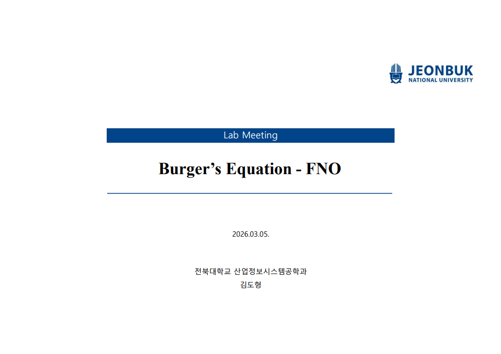
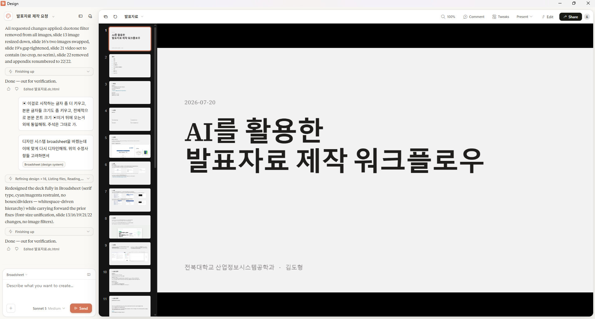
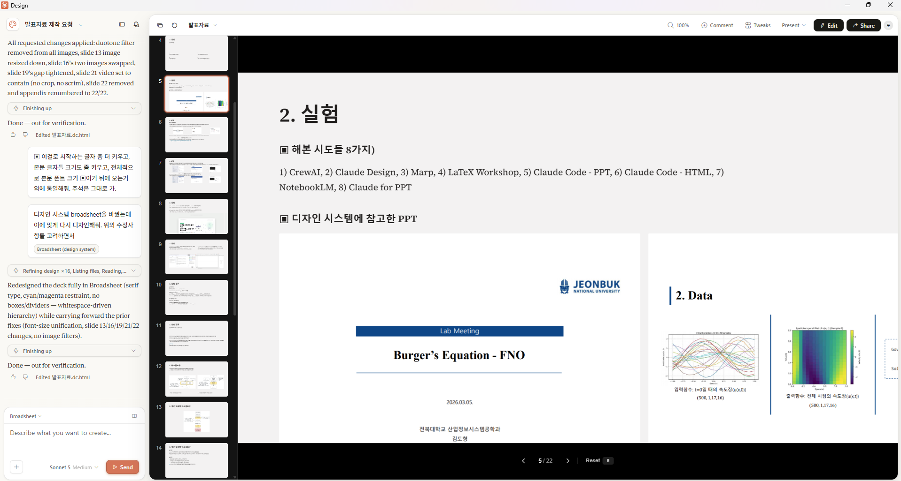
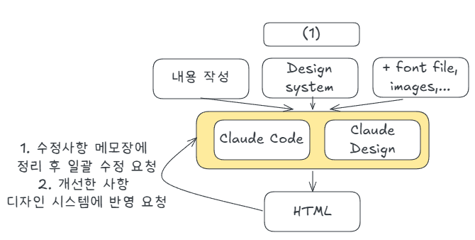
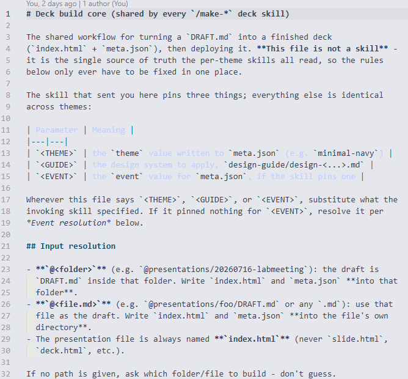
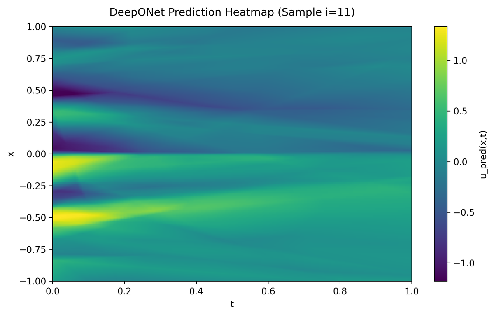
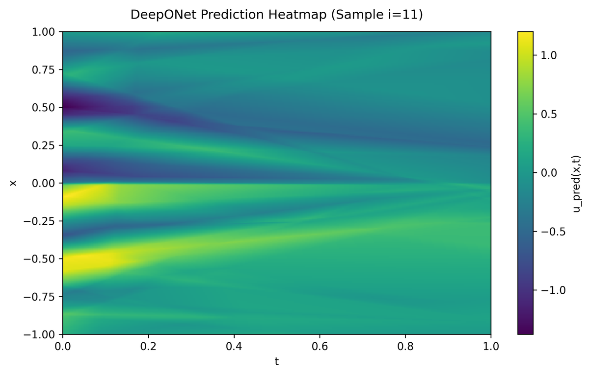

2. 실험
SEC. 02▣ 해본 시도들 8가지)
1) CrewAI, 2) Claude Design, 3) Marp, 4) LaTeX Workshop
5) Claude Code - PPT, 6) Claude Code - HTML, 7) NotebookLM, 8) Claude for PPT
5) Claude Code - PPT, 6) Claude Code - HTML, 7) NotebookLM, 8) Claude for PPT
▣ 디자인 시스템에 참고한 PPT



5 / 23
2. 실험
SEC. 02▣ 각 시도별 결과
1) CrewAI: 멀티에이전트 프레임워크, '논문리뷰'를 위한 AI 에이전트, 발표자료에 대해 내용작성 부터 발표자료 제작까지 담당
평가: 낮은 품질, 수식 작성 문제, PPT이기에 수정 용이, 30분 이상 ppt 제작 시간, 추가적인 비용 소모


2) Claude Design: Claude에서 PPT 및 웹디자인을 위해 내놓은 서비스
평가: 적절한 품질, 수식 렌더링 일부 오류(수정 가능) - 수정 비교적 용이, 적절한 작업시간, 토큰 사용량 문제
→ 이전보다 개선된 것으로 보여 앞으로 워크플로우 개인화 예정



※ 멀티에이전트 프레임워크: API로 ai들을 호출 및 상호작용하게하여 하나의 작업을 분담하여 완료하게 해주는 프레임워크. Crewai, AutoGen, Langraph
6 / 23
2. 실험
SEC. 02
3) Marp: IDE에서 마크다운 파일 미리보기 시 16:9 슬라이드 형식으로 보게해주는 익스텐션, 테마 적용 가능
평가: 낮은 품질, 수식 렌더링 문제 x, 수정 어려움(PDF 또는 PPT로 변환 시 변환된 개별 슬라이드들이 배경으로 인식 → PPT 내 수정 불가), 적당한 작업시간


4) LaTex Workshop: VSCode에서 LaTeX 문서를 편집∙컴파일 하게 해주는 익스텐션, 테마 적용 가능
평가: 낮은 품질, 수식 렌더링 문제 x, 수정 어려움, 적당한 작업시간, 어색한 문법


7 / 23
2. 실험
SEC. 02
5) Claude Code - PPT: PPT 기본 테마에 내용 작성 후 Claude Code에게 디자인 부탁
평가: 낮음 품질, 수식 렌더링 오류, 수정 용이, 긴 작업 시간, 토큰 사용량 문제
6) Claude Code - HTML: 마크다운 파일에 내용 작성 후 Claude Code에게 디자인 부탁
평가: 적절한 품질, 수식 렌더링 문제 x, 수정 어려움, 적당한 작업시간


8 / 23
2. 실험
SEC. 02
7) NotebookLM: Google에서 AI 기반 문서 요약 및 인사이트 제공 서비스, 이미지 제작 및 슬라이드 제작 기능 존재
평가: 수정의 어려움, 각 슬라이드가 하나의 이미지로 제작, 낮은 품질


8) Caude for PPT: PPT 내에서 Claude Chat을 불러올 수 있는 Claude 서비스
평가: 낮은 품질, 수식 렌더링 문제, 수정 용이, 긴 작업 시간, 원하는 요청사항을 LLM이 제대로 반영하지 못함. 토큰 사용량 문제

9 / 23
4. 워크플로우
SEC. 04(1) 랩미팅 또는 내부회의 같은 반복적이고 디자인의 중요도가 높지 않은 경우
(2) 수업 발표나 외부에서 임팩트 있게 디자인을 신경써서 만들어야 되는 경우

디자인, 사진 배치등을 일부 포기한다.

PPT로 변환을 위해 클로드 디자인을 사용한다.
12 / 23
5. 개인 맞춤형 워크플로우
SEC. 05
13 / 23
5. 개인 맞춤형 워크플로우
SEC. 05▣ 발표자료 제작 방법
- 발표 폴더 및 폴더 내 assets폴더와 DRAFT.md 생성
- 폴더 구성요소: assets/, DRAFT.md, index.html, meta.json
- DRAFT.md에 발표 내용 작성
- "/make-labmeeting '@DRAFT.md 파일경로'" → AI Agent가 발표자료 생성 후 배포
- /make-labmeeting 스킬: 폴더의 DRAFT.md를 읽고, 랩미팅용 디자인으로 index.html 및 meta.json을 작성, 스크린샷으로 전체 디자인 체크, 자동 배포하는 마크다운 문서로 된 스킬
- 발표자료 확인 후 수정할 사항 일괄 지시 후 검토 과정 반복
- 수정했던 내용 디자인 시스템에도 수정사항 반영하여 업데이트


17 / 23
5. 개인 맞춤형 워크플로우
SEC. 05▣ 개인화된 워크플로우
▣ 프로젝트 사용 영상
18 / 23
7. HTML 활용 예시
SEC. 07Burgers 방정식 · DeepONet 예측 upred(x,t) - 샘플 i=11





기본
기준 설정
1 / 6
눈금을 끌거나 클릭해서 학습 설정을 바꿔 비교
※ DeepONet(Burgers, 샘플 i=11) 예측 u_pred(x,t) - 마우스로 설정을 바꿔 결과를 비교할 수 있다.
※ 설정마다 컬러바 범위가 달라 색만으로 직접 비교하기보다 컬러바 눈금을 함께 볼 것.
20 / 23